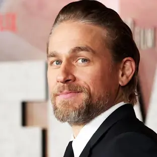

Nesta página você irá saber mais sobre os atores principais de Pacific Rim.
Idris Elber
Idrissa Akuna Elba OBE (Londres, 6 de setembro de 1972) é um ator, produtor, diretor e músico britânico. Ele é conhecido por papéis, incluindo Stringer Bell na série The Wire da HBO, DCI John Luther na série Luther da BBC, e Nelson Mandela no filme biográfico Mandela: Long Walk to Freedom (2013). Ele foi indicado quatro vezes ao Globo de Ouro de melhor ator em minissérie ou telefilme, ganhando um, e foi nomeado cinco vezes para o Primetime Emmy Award.
Elba apareceu em American Gangster (2007) e Prometheus (2012) de Ridley Scott. Elba interpretou Heimdall em Thor (2011) e suasa sequências Thor: The Dark World (2013) e Thor: Ragnarok (2017), bem como Avengers: Age of Ultron (2015) e Avengers: Infinity War (2018). Ele também estrelou Pacific Rim (2013), Beasts of No Nation (2015), pelo qual recebeu indicações ao Globo de ouro e BAFTA de Melhor Ator Coadjuvante, e Molly's Game (2017). Em 2016, ele dublou o chefe Bogo em Zootopia, Shere Khan na adaptação live action/CGI de O Livro da Selva, Fluke em Finding Dory e desempenhou o papel de Krall em Star Trek Beyond. Ele fez sua estreia na direção em 2018 com uma adaptação do romance de 1992 Yardie de Victor Headley. Em 2021, ele retratou Bloodsport em The Suicide Squad, ambientado no Universo Estendido DC.
Além de atuar, Elba se apresenta como DJ sob o apelido de DJ Big Driis (ou Big Driis the Londoner) e como músico de R&B. Em 2016, ele foi nomeado na lista Time 100 das pessoas mais influentes do mundo. Em maio de 2019, seus filmes arrecadaram mais de $ 9,8 bilhões na bilheteria global, incluindo mais de $ 3,6 bilhões na América do Norte, onde ele é um dos 20 atores de maior bilheteria.
Charlie Hunnam

Charlie Hunnam é filho de William Hunnam e Jane Hunnam. Nasceu em Newcastle, mas com apenas dois anos de idade se mudou com a mãe, depois da separação, para um vilarejo em Melmerby, Cumbria. Lá, depois de um tempo, ele cursou licenciatura em Teoria e História do Cinema com Artes Cênicas na Cumbria College of Art and Design.
Charlie foi descoberto por um gerente de produção de Byker Grove numa loja de sapatos na véspera de Natal, aos 17 anos. E com isso conseguiu seu primeiro papel na série, interpretando Jason.
Aos 18 anos, conseguiu seu primeiro grande papel como Nathan Maloney na série Queer as Folk. Depois de um tempo se mudou para Los Angeles e sua carreira começou a crescer. Logo ele conseguiu um papel na série Young Americans, dando vida a Gregor Ryder. E foi em 2002 que Charlie chegou nos cinemas com o filme Sem Pistas.
Em 2008 começou a interpretar um dos seus personagens mais reconhecidos, Jackson "Jax" Teller na série Sons Of Anarchy.
Sua filmografia conta com filmes como Rei Arthur - A Lenda Da Espada (2017); Z - A Cidade Perdida (2016); A Colina Escarlate (2015); Círculo De Fogo (2013); A Fuga (2012); Hooligans (2005) e outros.
Burn Gorman
Burn Hugh Gorman (nascido em 1 de setembro de 1974) é um ator e músico inglês nascido nos Estados Unidos. Ele é conhecido por seus papéis na televisão como Owen Harper na série da BBC Torchwood (2006–2008), Karl Tanner na série da HBO Game of Thrones (2013–14), Major Edmund Hewlett na série da AMC Turn: Washington's Spies (2014–2017), 'The Marshal' na série do Prime Video The Man in the High Castle (2015) e Adolphus Murtry na série do Prime Video The Expanse (2019). Seus papéis no cinema incluem Phillip Stryver em The Dark Knight Rises (2012) e Hermann Gottlieb em Pacific Rim (2013) e sua sequência Pacific Rim: Uprising (2018). Ele também aparecerá em Beetlejuice Beetlejuice de Tim Burton como o reverendo Padre Damien (2024).
Burn Hugh Gorman nasceu em 1 de setembro de 1974 em Los Angeles , Califórnia , filho de pais ingleses. Seu pai era professor de linguística na UCLA . Ele tem três irmãs mais velhas. Ele teria afirmado ser sobrinho de Bartley Gorman , considerado " Rei dos Ciganos ". Aos 7 anos, ele se mudou com sua família de volta para a Inglaterra, onde se estabeleceram em Londres . Mais tarde, ele treinou na Manchester School of Theatre na Manchester Metropolitan University.
Gorman também é um beatboxer talentoso, tendo participado da Convenção Internacional de Beatbox Humano de 2003 (onde ganhou o título de Campeão de Beatbox Humano da Rádio 1Xtra).
Guillermo del Toro/Diretor
Guillermo del Toro Gómez é um diretor, produtor, roteirista e autor mexicano, mais conhecido pelos seus premiados filmes de fantasia, entre eles O Labirinto do Fauno (2006) e A Forma da Água (2017). Nascido em Guadalajara, o cineasta no Centro de Investigación y Estudios Cinematográficos na universidade da cidade, pela qual publicou o seu primeiro livro, uma biografia do diretor Alfred Hitchcock.
Del Toro também estudou efeitos especiais e maquiagem com o artista Dick Smith, trabalhando por 10 anos no segmento dentro do cinema. Isto levou o diretor a fundar uma empresa própria focada na área de design chamada Necropia, seguida pela produtora de cinema Tequila Gang. Além disso, ele é um dos fundadores do Festival Internacional de Cinema de Guadalajara.
Guillermo del Toro acumula diversos prêmios e honrarias pelos seus trabalhos, incluindo o Oscar de melhor diretor e melhor filme por A Forma da Água na 90.ª cerimônia. Ao longo dos anos, ele equilibrou sua carreira entre filmes de baixo orçamento na língua espanhola, com grandes produções de Hollywood. Entre os seus principais filmes estão: Mutação (1997), Blade II - O Caçador de Vampiros (2002), Hellboy (2004) e a sequência Hellboy II - O Exército Dourado (2008), Círculo de Fogo (2013), A Colina Escarlate (2015), e O Beco do Pesadelo (2021).
Del Toro também produziu ou contribuiu com roteiro de outros grandes sucessos do cinema, como O Orfanato (2007), Não Tenha Medo do Escuro (2010), a saga do Hobbit (2012 - 2014), Mama (2013), Festa no Céu (2014), Círculo de Fogo: A Revolta (2018), Histórias Assustadoras para Contar no Escuro (2019) e Convenção das Bruxas (2020). Ele é o co-autor da trilogia de livros The Strain, que posteriormente foi adaptada para a televisão em formato de série.
Ao lado do estúdio DreamWorks Animation, ele criou a série animada Trollhunters (2016-2018), 3Below (2018 - 2019), e Wizards (2020), séries situadas no universo da trilogia Tales of Arcadia, outra adaptação de uma co-autoria dele com Daniel Kraus. Outras co-autorias e produções de Del Toro com o estúdio DreamWorks foram Gato de Botas (2011), Kung Fu Panda 2 (2011), A Origem dos Guardiões (2012) e Kung Fu Panda 3 (2016).
Guillermo del Toro foi incluído pela revista TIME como uma das 100 pessoas mais influentes no mundo em 2018 e teve uma estrela incluída na calçada da fama em 2019. Ele é amigo próximo dos diretores mexicanos Alfonso Cuarón e Alejandro G. Iñárritu, sendo um trio conhecido como "The Three Amigos of Cinema".